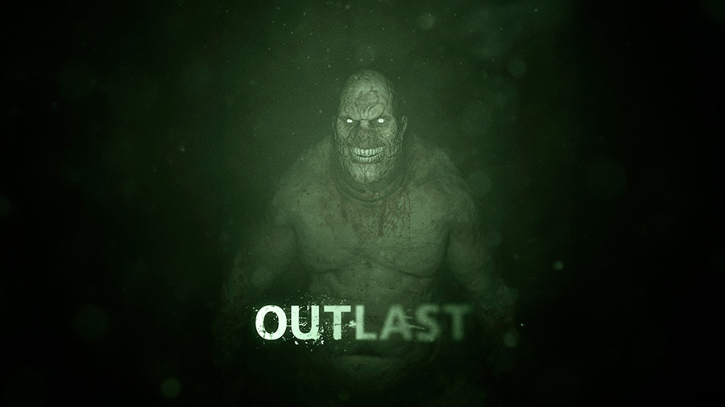
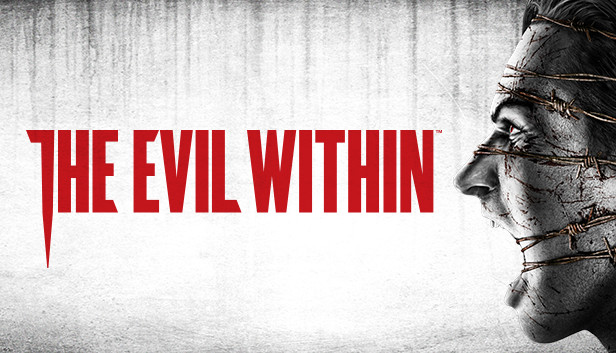

¿Qué son los juegos de terror?
El género de terror en los videojuegos está diseñado para provocar miedo, tensión y suspense en los jugadores. Estos juegos suelen sumergir al jugador en atmósferas inquietantes, con escenarios oscuros, sonidos perturbadores y narrativas que exploran lo desconocido o lo sobrenatural. El objetivo principal es generar una experiencia emocional intensa, ya sea enfrentando criaturas aterradoras, resolviendo misterios macabros o simplemente sobreviviendo a situaciones extremas. Desde mansiones embrujadas hasta apocalipsis zombis, el género de terror ofrece desafíos únicos y momentos inolvidables para quienes buscan emociones fuertes.
Elementos que distinguen a los juegos de terror
Los juegos de terror se caracterizan por sumergir al jugador en situaciones de vulnerabilidad, donde la atmósfera opresiva y la incertidumbre juegan un papel fundamental. Más allá de los sustos repentinos, estos títulos suelen emplear recursos como la escasez de recursos, la sensación de aislamiento y la amenaza constante para mantener la tensión. El diseño de sonido, la iluminación tenue y la narrativa inquietante contribuyen a crear una experiencia inmersiva que desafía tanto la mente como los reflejos del jugador. En muchos casos, el miedo proviene de lo desconocido y de la anticipación, más que de la acción directa, haciendo que cada decisión y cada paso sean cruciales para la supervivencia.
Características principales de los juegos de terror:
- Atmósfera inquietante: Escenarios oscuros, sonidos perturbadores y una ambientación diseñada para generar tensión y miedo.
- Escasez de recursos: Munición, salud y otros recursos suelen ser limitados, aumentando la sensación de vulnerabilidad.
- Sorpresas y sustos: Uso de eventos inesperados y enemigos impredecibles para mantener al jugador en alerta.
- Narrativa misteriosa: Historias que exploran lo desconocido, lo sobrenatural o lo psicológico, invitando a descubrir secretos ocultos.
Juegos icónicos del género
Outlast

Outlast es un juego de terror en primera persona que se desarrolla en un manicomio abandonado y plagado de horrores. El jugador asume el papel de un periodista de investigación que, armado solo con una cámara de visión nocturna, debe explorar el hospital psiquiátrico y descubrir sus oscuros secretos. La atmósfera opresiva, la ausencia de armas y la necesidad de esconderse o huir de los enemigos hacen que la tensión sea constante. Outlast es conocido por sus sustos intensos, su narrativa inquietante y su capacidad para mantener al jugador en un estado de alerta permanente.
Silent Hill

Silent Hill es una de las sagas más emblemáticas del género de terror psicológico en los videojuegos. Ambientado en un misterioso pueblo cubierto de niebla, el juego destaca por su atmósfera opresiva, su inquietante diseño de sonido y su narrativa profunda cargada de simbolismo. Los jugadores exploran escenarios perturbadores mientras enfrentan criaturas grotescas y resuelven acertijos, todo mientras la historia explora temas como el trauma, la culpa y el miedo a lo desconocido. Silent Hill es reconocido por su capacidad para generar terror a través de la sugestión y la ambientación, más que por los sustos directos, convirtiéndose en un referente para el género.
The Evil Within

The Evil Within es un juego de terror de supervivencia dirigido por Shinji Mikami, creador de Resident Evil. El jugador asume el papel del detective Sebastián Castellanos, quien se ve atrapado en un mundo distorsionado y plagado de horrores sobrenaturales. El juego destaca por su atmósfera opresiva, enemigos grotescos, recursos limitados y una narrativa inquietante que mezcla lo psicológico con lo sobrenatural. The Evil Within es reconocido por su dificultad desafiante, su diseño de niveles retorcido y su capacidad para mantener la tensión y el miedo a lo largo de toda la experiencia.
¿Por qué prosperan los juegos de terror?
Experiencias emocionales intensas: Los juegos de terror ofrecen sensaciones únicas de miedo, tensión y adrenalina que atraen a quienes buscan emociones fuertes.
Inmersión atmosférica: El uso de sonido, iluminación y escenarios inquietantes sumerge al jugador en mundos envolventes y perturbadores.
Desafío psicológico: Estos juegos ponen a prueba la valentía, la toma de decisiones bajo presión y la capacidad de enfrentar lo desconocido.
Narrativas intrigantes: Las historias suelen explorar misterios, lo sobrenatural o lo psicológico, manteniendo el interés y la curiosidad del jugador.
Sorpresa y anticipación: La imprevisibilidad de los sustos y los peligros constantes mantienen la tensión y hacen que cada partida sea diferente.
El futuro del genero de Terror
El futuro del género de terror en los videojuegos promete experiencias aún más inmersivas y aterradoras gracias a los avances tecnológicos. La realidad virtual y aumentada permitirán una mayor sensación de presencia y vulnerabilidad, mientras que la inteligencia artificial hará que los enemigos y eventos sean más impredecibles y personalizados. Además, la narrativa interactiva y las decisiones del jugador tendrán un impacto más profundo en el desarrollo de la historia, aumentando la rejugabilidad y la conexión emocional. Con estas innovaciones, el género de terror seguirá evolucionando para ofrecer desafíos psicológicos y sensoriales cada vez más intensos.